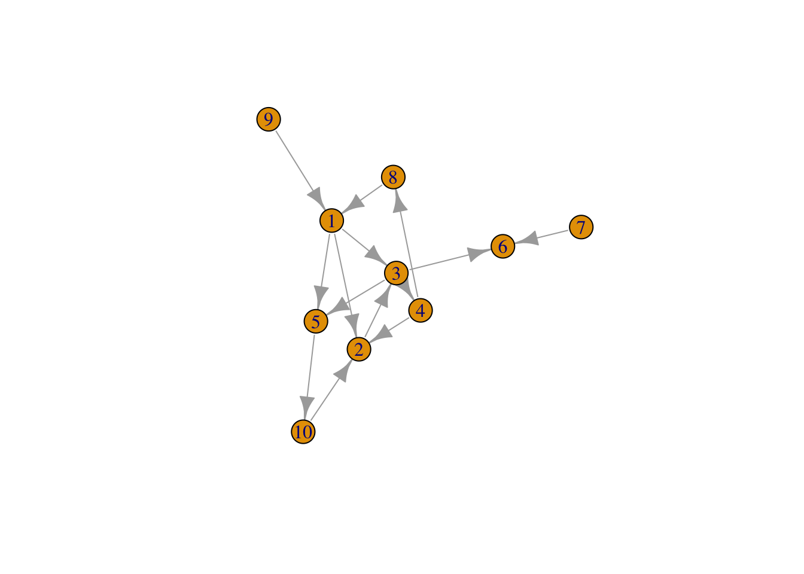
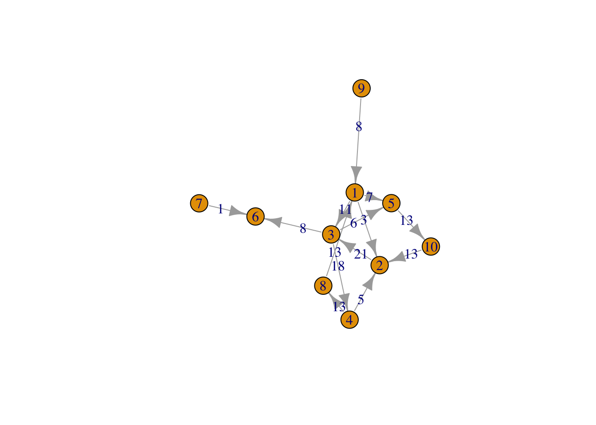

Chapter 10 Centrality
Importancia de los nodos en un grafo.
- Número de arcos de entrada-salida de los nodos.
- Redes con alta centralidad tienen pocos nodos con muchas conexiones.
- Redes con baja centralidad tienen muchos nodos con similar o menos conexiones.
- Ver https://en.wikipedia.org/wiki/Centrality#PageRank_centrality
10.1 Degree
Número de arcos conectados a un vértice. Señala la importancia de un vértice o el nivel de actividad del vértice en la red.
Cómo de central es un nodo en la red
Cuántos arcos de entrada-salida tiene o con cuántos nodos se conecta directamente via un arco.
centr_degree,igraph::degree
g1## IGRAPH 6050a01 D--- 10 14 --
## + edges from 6050a01:
## [1] 1-> 2 1-> 3 2-> 3 3-> 4 3-> 5 1-> 5 4-> 2 3-> 6 4-> 8 8-> 1
## [11] 9-> 1 10-> 2 7-> 6 5->10plot(g1)
igraph::degree(g1)## [1] 5 4 5 3 3 2 1 2 1 2igraph::degree(g1, mode="in")## [1] 2 3 2 1 2 2 0 1 0 1igraph::degree(g1, mode="out")## [1] 3 1 3 2 1 0 1 1 1 1deg <- centr_degree(g1)
deg## $res
## [1] 5 4 5 3 3 2 1 2 1 2
##
## $centralization
## [1] 0.1358025
##
## $theoretical_max
## [1] 16210.2 Betweenness
Mide el grado en el que la información fluye a través de un vértice particular y su importancia relativa como un intermediario en la red.
Describe nodos que son conexiones clave o puentes entre grupos de nodos.
- El número de caminos más cortos que pasan por un nodo dado (medida relativa) - la suma de las longitudes de los caminos más cortos entre otros nodos pasando por el nodo, dividida por las longitudes de camino más cortas (no necesariamente a través del nodo) entre los otros nodos.
igraph::betweenness
igraph::betweenness(g1)## [1] 14 14 25 11 6 0 0 6 0 6- Por el vértice 6 no pasa ningún camino más corto entre dos vértices.
- Por el vértice 3 pasan 25 caminos más cortos entre dos vértices.
- …
10.3 Edge_betweenness
Similar al anterior pero teniendo en cuenta cada arco.
igraph::edge_betweenness
g1 <- set.edge.attribute(g1, "weight", value= 1)
bg <- edge_betweenness(g1)
plot(g1, edge.label = bg)
10.4 Closeness
Distancia a otros nodos. Un nodo con valor alto de este estimador es más central y puede difundir la información a muchos otros nodos.
Se obtiene como 1 divido por la suma de las distancias geodésicas desde un vértice al resto. Alcanzará su valor máximo cuando un vértice esté conectado a todos los demás. Longitud media de los caminos más cortos (geodésicos).
Mide cuantos pasos se requieren desde un vértice para alcanzar el resto de vértices de la red.
Caminos cortos entre vértices señalan que estos están cercanos unos a otros.
centr_clo,igraph::closeness
igraph::closeness(g1)## [1] 0.08333333 0.05882353 0.08333333 0.06250000 0.04000000 NaN
## [7] 1.00000000 0.06250000 0.05000000 0.0476190510.5 Eigenvector
No todas las conexiones tienen la misma importancia - medida de la importancia de un nodo.
La medida Eigenvector Centrality se calcula como el autovalor de mayor módulo de la matriz de adyacencia que contiene los pesos.
a high score to vertices that either have a lot of connections, or are connected to someone with a lot of connections
Eigenvector Centrality:
eigen_centrality
eigen_centrality(g1)## $vector
## [1] 0.94446858 0.87756472 1.00000000 0.67054129 0.68544140 0.31214483
## [7] 0.08943566 0.46273222 0.27060890 0.44783212
##
## $value
## [1] 3.490161
##
## $options
## $options$bmat
## [1] "I"
##
## $options$n
## [1] 10
##
## $options$which
## [1] "LA"
##
## $options$nev
## [1] 1
##
## $options$tol
## [1] 0
##
## $options$ncv
## [1] 0
##
## $options$ldv
## [1] 0
##
## $options$ishift
## [1] 1
##
## $options$maxiter
## [1] 1000
##
## $options$nb
## [1] 1
##
## $options$mode
## [1] 1
##
## $options$start
## [1] 1
##
## $options$sigma
## [1] 0
##
## $options$sigmai
## [1] 0
##
## $options$info
## [1] 0
##
## $options$iter
## [1] 6
##
## $options$nconv
## [1] 1
##
## $options$numop
## [1] 20
##
## $options$numopb
## [1] 0
##
## $options$numreo
## [1] 1510.6 Pagerank
Algoritmo de Google para realizar un ranking con la importancia de los resultados de la búsqueda.
Nodos son más importantes si tienen muchos enlaces de entrada.
page.rank
page.rank(g1)## $vector
## [1] 0.09371203 0.18396681 0.20662720 0.08224805 0.10879979 0.10239617
## [7] 0.02370367 0.05865910 0.02370367 0.11618350
##
## $value
## [1] 1
##
## $options
## NULL